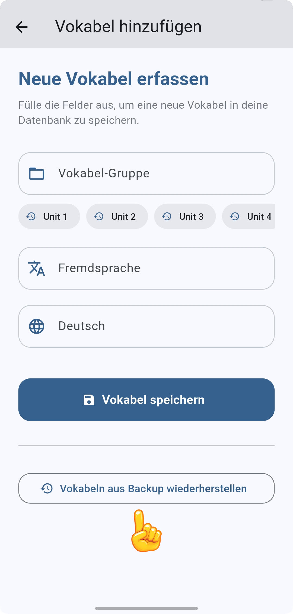

📖 Vokabeln in die App importieren
Das Importieren Ihrer eigenen Vokabellisten in VokabelSafe ist einfach und schnell. Folgen Sie dieser kurzen Anleitung, um Ihre Dateien auf das Smartphone oder Tablet zu übertragen.
📁 Vorbereitung: Datei übertragen
Bevor Sie starten, muss die JSON-Datei auf Ihrem Mobilgerät (Smartphone oder Tablet) gespeichert sein. Sie können die Datei ganz einfach übertragen:
- Per E-Mail an sich selbst senden und den Anhang speichern.
- Über einen Cloud-Dienst wie Google Drive, OneDrive oder iCloud.
- Per Messenger (z. B. WhatsApp, Signal oder Telegram) an sich selbst schicken.
Wichtig ist nur, dass die Datei im Speicher Ihres Geräts (z. B. im Ordner "Downloads") liegt.
1. Den Bereich "Vokabeln hinzufügen" öffnen
Starten Sie die VokabelSafe-App auf Ihrem Gerät. Tippen Sie auf der Hauptseite auf den Button "Vokabeln hinzufügen".
2. Import-Funktion starten
In der nun folgenden Ansicht finden Sie die Schaltfläche "Vokabeln aus Backup wiederherstellen". Tippen Sie auf diesen Button, um Ihre JSON-Datei auszuwählen und den Import zu starten.

💡 Tipp: Dateiformat beachten
Stellen Sie sicher, dass Ihre Vokabelliste im JSON-Format vorliegt. Falls Sie noch eine Excel-Tabelle oder CSV-Datei haben, nutzen Sie unseren Konverter oder lassen Sie sich die Liste direkt von einer KI erstellen.
3. Datei auswählen und fertig
Nach dem Tippen auf den Button öffnet sich die Dateiauswahl Ihres Geräts. Wählen Sie dort Ihre vorbereitete JSON-Datei aus (diese liegt meist im Ordner "Downloads"). Die Vokabeln werden nun automatisch importiert und sind sofort in Ihrer Liste verfügbar. Fertig!